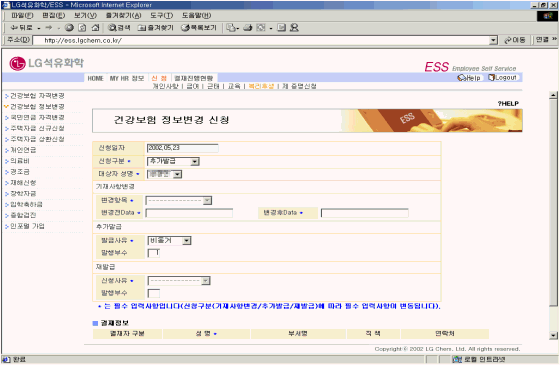

| Ⅰ. 개요 및 신청절차 |
| 1. 개요 |
| 건강보험증에 기재되어 있는 정보에 오류가 있거나 건강보험증 분실등으로 인한 재발급이나 추가발급 시 신청한다. |
| 2. 절차 |
 |
| Ⅱ. 화면사용법 및 유의사항 |
| <그림 1. 건강보험 정보변경 신청 화면> |
|  |
| 1) 신청구분 : 기재사항변경/추가발급/재발급 |
| 2) 대상자 성명 : 가족사항에 등록되어 있는 인원에 한함. |
| 3) 기재사항변경 시 반드시 변경항목을 선택하여 입력하여야 한다. |
| 4) 추가발급 시 반드시 발급사유를 선택하여야 한다. |
| - 비동거 : 동거를 하지 않으나 건강보험증이 필요한 경우 |
| - 수학 : 자녀의 교육관계로 자녀와 떨어져 있는 경우 |
| 5) 재발급 시 반드시 신청사유를 선택하여야 한다. |
| Ⅲ. 제출서류 |
| ※ 기재사항변경 또는 추가발급시 : 1. 호적등본 또는 주민등록등본 또는 재학증명서 |
| 2. 건강보험증 각 1부 |
| ※ 분실시 : 없음 |
| ※ 제출처 : 인력개발팀, 인사총무팀 |